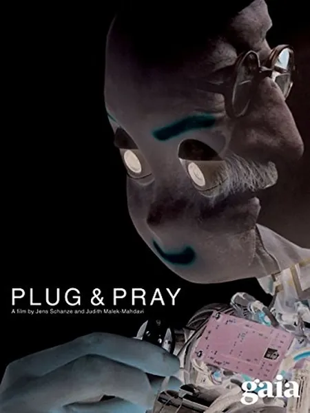

Подключите и молитесь
Plug and Pray
2010
Документальный
Документальный фильм о будущем робототехники и искусственного интеллекта, построенный на противопоставлении двух точек зрения: Рэймонда Курцвейла, верящего в слияние человека и машины, и Джозефа Вейценбаума — создателя одного из первых чат-ботов ELIZA, — который предостерегает: мы слишком легко отдаем машинам то, что должны были бы оставить себе. В центре повествования — лаборатории по созданию человекоподобных роботов, военные разработки и размышления о том, что для машины означает «понимание». Это редкий пример документального кино, где дискуссию ведут сами создатели технологий, а не сторонние наблюдатели.
Описание на английском
A documentary on the future of robotics and AI built on a contrast of two voices: Raymond Kurzweil, who believes in merging humans and machines, and Joseph Weizenbaum — creator of the early chatbot ELIZA — warning that we too easily hand machines what we should keep for ourselves. Between them: humanoid labs, military robots and reflections on what 'understanding' means to a machine. A rare documentary where the debate is led by the technology's creators, not its commentators.